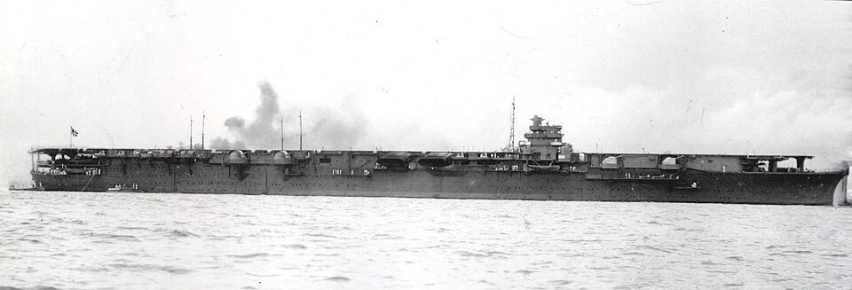

Shōkaku
Portaviones de Japón, perteneciente a la clase Shōkaku. Participó en Pearl Harbor, el mar del Coral y combates de portaviones alrededor de las Salomón.

Diseño y función
Shōkaku pertenecía a la clase Shōkaku. Portaviones de escuadra para operaciones aeronavales. Sus prestaciones se detallan en la tabla técnica, con las fechas o condiciones disponibles en la referencia.
Operaciones y trayectoria
Participó en Pearl Harbor, el mar del Coral y combates de portaviones alrededor de las Salomón. Los daños y el desgaste de sus grupos aéreos condicionaron su disponibilidad entre operaciones.
Destino final y conservación
Hundido por el submarino USS Cavalla durante la batalla del mar de Filipinas, el 19 de junio de 1944.